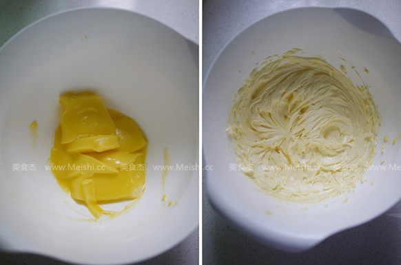
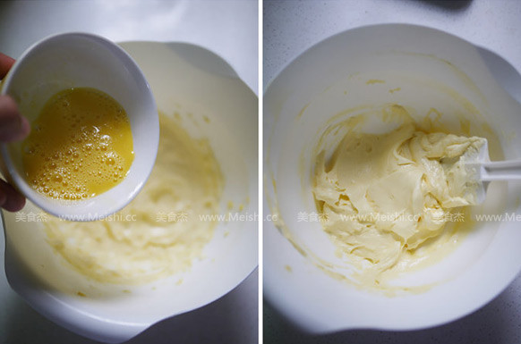
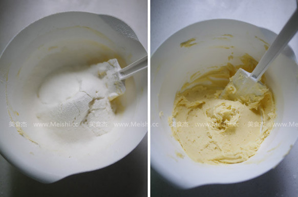
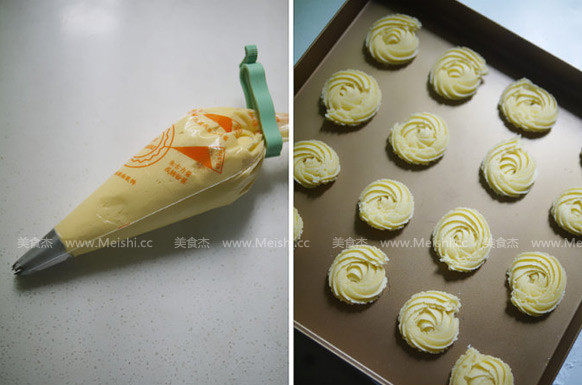
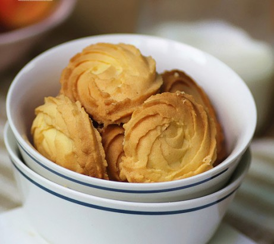

黄油曲奇
工艺：烤 口味：甜
准备时间：30min 烹饪时间：25min

西式糕点（店家）
发表于 2016-11-30 12:10:45
用料
高筋面粉100g，鸡蛋30g，黄油100g，糖粉40g，玉米淀粉50g
黄油曲奇的做法
1. 黄油室温充分软化成膏状，加入糖粉打发到颜色变浅，呈羽毛状
2. 蛋液充分打散变浅，分三次加入，每次加入后用刮刀按压至全部吸收后再加入剩下的蛋液，蛋液全部拌入后的状态
3. 筛入混合均匀的高筋面粉与淀粉，刮刀按压均匀，不颗粒
4. 将太阳花裱花嘴装入裱花袋，放入曲奇面糊，挤入不沾烤盘，如果用普通烤盘请垫油纸，烤箱预热200度，烤约15分钟左右
5. 完成

不错哦233
发表于2016-11-30 16:19:44
曲奇预拌粉可以换成蛋糕预拌粉么
发表于2016-11-30 16:19:44
看着非常棒，ok=.=
发表于2016-11-30 16:19:44
| 美食 | 甜点 | 厨房必备 | 主食 | 商家参考 | 天天美食 | 123菜谱大全 | 爱奇艺 | 音乐 | 图吧 | 饮食健康 | 搜狐论坛 |
| 赶集网 | 美食网 | 餐饮 | 杂志网 | 厨师网 | 好豆菜谱 |